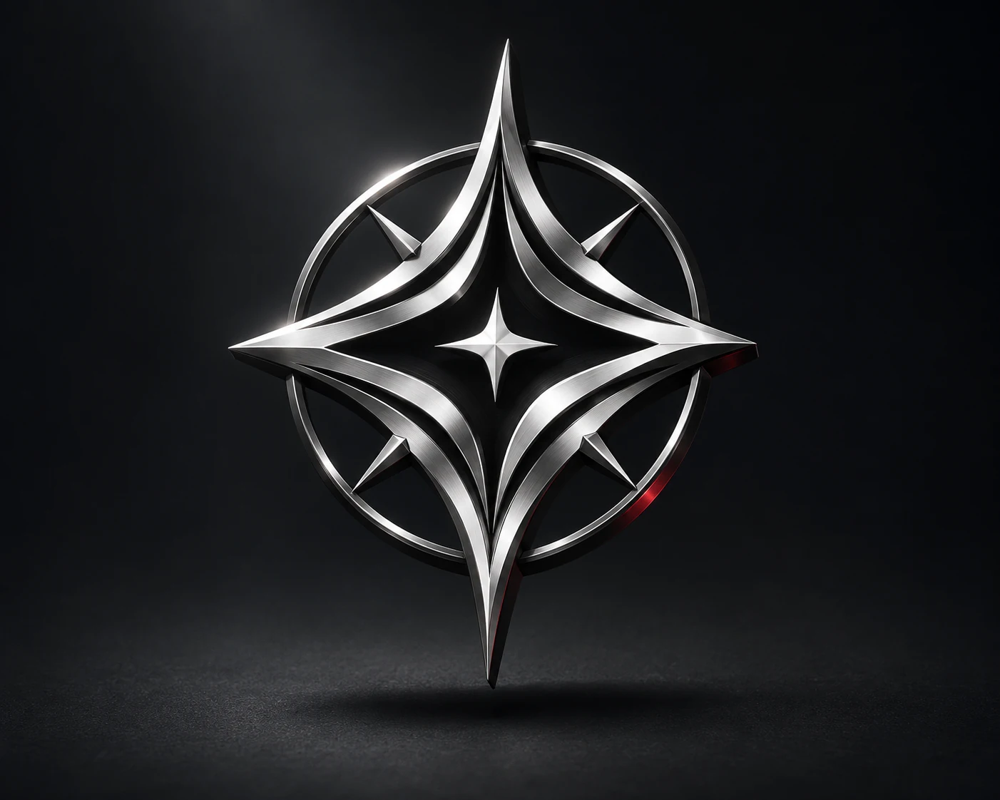
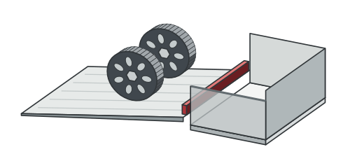

FIRST TECH CHALLENGE / TEAM 31675
ONYXROBOTICS.
We’re a student robotics team from Cedar Park, Texas. This season, we’re designing a way to collect pollen on the BIOBUZZ field.

- Home base
- Cedar Park, TX
- Program
- ICBC Robotics
- 2026–27 season
- BIOBUZZ™
ENGINEERING
Inside the
pollen intake.
A ramp, two flex wheels and a small gate. Explore a student’s Onshape design for moving game pieces from the floor into storage.
See how it works
ON THE FIELD
Competition season
See where Team 31675 competes in the Central Austin Robotics League and learn how a BIOBUZZ match works.
View the seasonICBC ROBOTICS
Support the next build.
Help our students get the parts and materials they need for robotics.